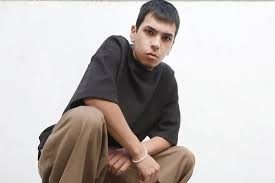

¿Quien es?
Camilo Joaquín Villarruel nació el 25 de octubre de 2006 en la ciudad de Morón, en la provincia de Buenos Aires. Es el tercer hijo del matrimonio conformado por Walter Villarruel y Aldana Celeste Ríos. Tiene dos hermanas mayores, Ángeles y Alma, y un hermano menor, Santino. Su interés por la música despertó entre los 8 y 9 años, inspirado por una de sus hermanas. Juntos escribían canciones y participaban en competencias de freestyle. A los 11 años, llegó incluso a aparecer en un video en el El Quinto Escalón. Además de la música, también sintió una fuerte atracción por el fútbol, deporte que practica desde pequeño y por el que siente una profunda pasión. Es fanático del Club Deportivo Morón, al que actualmente apoya como patrocinador, y llegó a integrar las divisiones inferiores del Sacachispas Fútbol Club.
